KAHVE
-
Espresso
tek 120 ₺·duble 135 ₺
-
Türk Kahvesi
130 ₺
-
Filtre Kahve
170 ₺
-
Americano
175 ₺
-
Red Eye
200 ₺
filtre + 1 shot
-
Black Eye
230 ₺
filtre + 2 shot
KAHVESİZ
-
Demleme Çay
70 ₺
-
Sıcak Çikolata
210 ₺
sütlü veya beyaz
-
Salep
210 ₺
-
Chai Tea Latte
210 ₺
SÜTLÜ KAHVE
-
Latte
200 ₺
-
Cappuccino
210 ₺
-
Flat White
210 ₺
-
Cortado
210 ₺
-
Mocha
235 ₺
klasik veya beyaz
-
Caramel Macchiato
235 ₺
vanilya tabanlı, üstü karamel soslu
MATCHA & UBE
-
Matcha Latte
230 ₺
-
Ube Latte
275 ₺
-
Sade Matcha
255 ₺
sütsüz, suyla çırpılmış
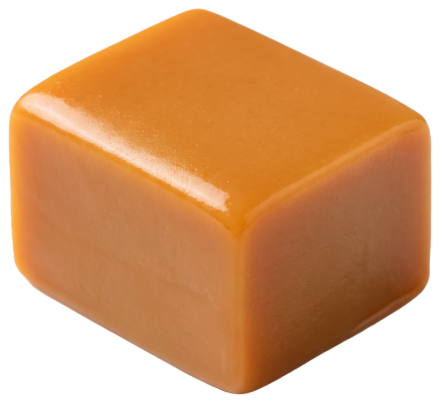
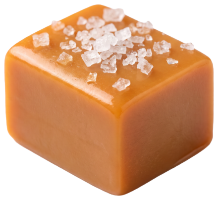
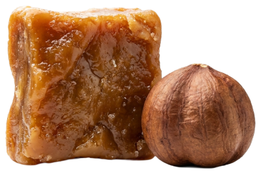
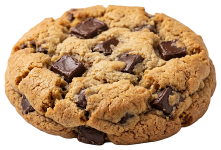
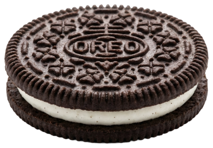
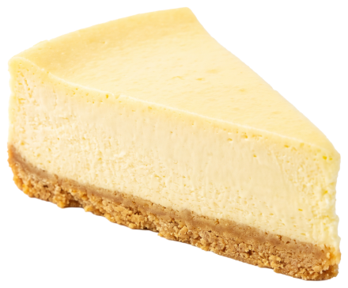
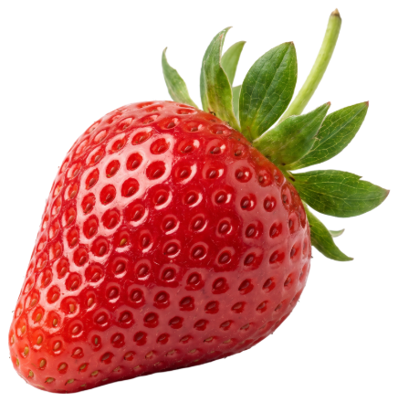
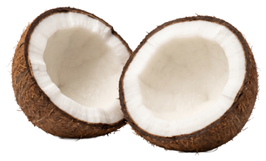
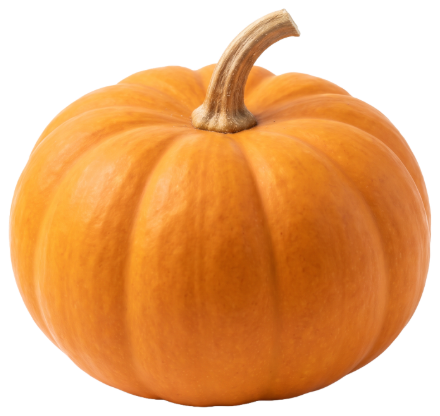
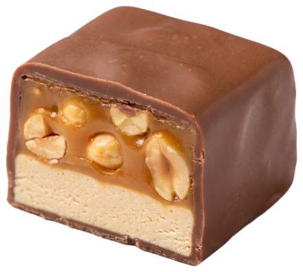
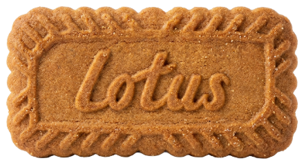
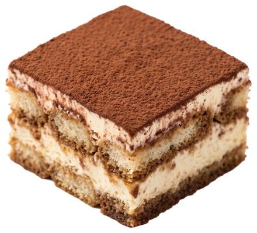
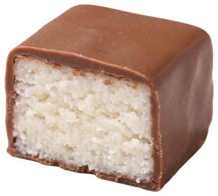